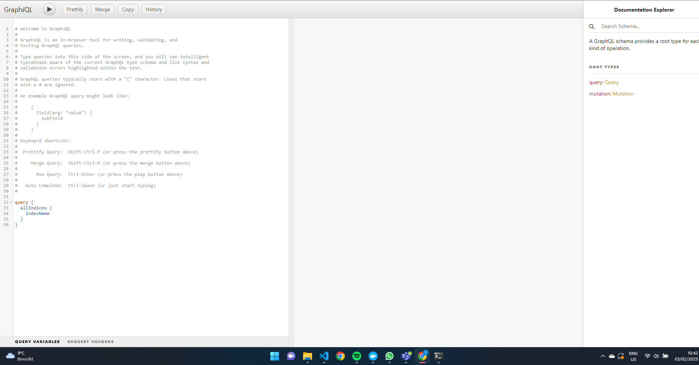

Using the GraphQL-API¶
This page talks about the inner working of GraphQL API and why to use the Grahpql API. It consist of describing each of the existand functionalities and the technical components to make it functional. Also the integration with the ElasticWrap will also be discussed.
Why use GraphQL-API?¶
The main purpose for the GraphQL API (also called grimoire-api), is to facilitate an easier solution for querying data, and make interaction with the data more accessible to data scientist. Currently there already is an integration to make interacting with the database(currently ElasticSearch) easier, by importing a library which makes it possible to create code to retrieve data from the database like an ORM. However, this presuposse the knowledge of Python, which some data scientist or even other member of the SIG team might either not know or aren’t well experienced with. Therefor creating an API which can facilitate in easier interaction with the database through simple queries, makes it more accessable to other members.
The reason for choosing GrahpQL specificcaly, is that some within SIG already have experience using the tooling. Another reason is that creating an instance of GraphQL is pretty easy to facilitate, and can be developed by multiple programing languages. However, since most of the Grimoire suite has been developed in python, we have choosen to specifically use Graphene, a GraphQL Python implementation to develop.
Technical implementation of GraphQL-API.¶
As mentioned before we’ll use Graphene to implement GraphQL. On the deployment side we’ll make use of Django to create a server to run GraphQL on. Before you start use grimoire api you’ll need to have installed the following libraries and package
Python 3.6 or newer, and pip to install packages
Virtualenv to run Graphene on.
pip install django graphene-django
Currently there are two classes on which a member of SIG can query, mainly the commit messages and indices of grimoirelab. Each of them has a module class which is based upon django database models, an example of which is the following:
# Create your models here.
class Commit(models.Model):
date = models.CharField(max_length=20)
message = models.CharField(max_length=250)
name = models.CharField(max_length=100)
repo = models.CharField(max_length=50)
title = models.CharField(max_length=50)
url_id = models.CharField(max_length=200)
commit_id = models.CharField(max_length=200)
def __str__(self) -> str:
return self.title
You can add Strings in the form of CharFields, but also numbers(integers, floats, ect.) but also objects as dates. These models will be used as input/output to and from GraphQl.
When a developer adds addtional changes to grimoire-api, they have to perform migrations of the model. To do this you’ll need the following commands:
$ python manage.py makemigrations
$ python manage.py migrate
Lastly if you want to upload data to the django server, for example for testing purposes you can make use of this command:
python manage.py loaddata filename.json
How to use GraphQL?¶
To run grimoire-api, you first have to deploy the server using the following command.
python manage.py runserver
It will then provide you a django instace with a url, most time the url is :ref:’http://127.0.0.1:8001/’
You will get to see the following page:
You can run two different commands while using graphql, those are queries and mutations. The queries are mainly GET request queries to retrieve the data from the ElasticSearch database. And example of such a query is the following
With the following query :
query {
allIndices {
indexName
}
}
You get the following result.
The same can be done for mutations, which are other CRUD operations on both the Indices and Commits. You’ll have to replace query by mutations and add the rest to perform the query.
Lastly to create query, you can go to the manual section of the right side of the GraphQL UI, and you’ll see the different option that are avaialbe for both the query and mutation options.
Integration of GraphQL and ElasticWrap¶
For both the query and migration we have some controller classes which take care of the communicaiton with the user of grimoire api. However, to facilitate the interaction we already have ElasticWrap which takes care of such a function. Therefor instead of directly communcating with the database, we decided to use ElasticWrap as an intermiadte to facilitate the communicaiton between the ElasticSearch and GraphQL. An example of such an API route is the following:
def resolve_all_commits_of_index(self, info, project_name):
elasticwrap = ElasticWrap(hosts=settings.ELASTICSEARCH_HOST)
documents = elasticwrap.commits.search([project_name], query={"match_all": {}})
commits = map(lambda document: Commit(
date=document['_source']['data']['CommitDate'],
message=document['_source']['data']['message'],
name=document['_source']['data']['Commit'],
repo=document['_source']['origin'],
commit_id=document['_source']['data']['commit']),
list(documents)[0])
return commits
This is a query function that retrieves all data on the commits from ElasticSearch. The first step is to astablish a connetction, with the Elas instance, which is done by creating an ElasticWrap instance which refers to the ElasticSearch database with the url. the next step is to use the multitude of fuction ElasticWrap has, in this case get all commits by search ing for a specifici project, in the code. Then the data is retrieved and formed in to a list of commits by using the Commit model, which is then returned and GraphQL formats that particular data to a JSON format.